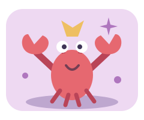

道具還沒上場。
請把笑點留在現場
搞事小學堂加戲，也會收戲。
你挑的道具，真的會改變舞台。
搞出什麼場面，就得收什麼尾。

今天去哪裡加戲？
每幕兩步：挑道具 → 親眼看結果 → 挑對收尾方式。先選再確認，選錯也會演出不同結果；收尾依你實際選的道具，不會偷換成標準劇本。
全是虛構卡通舞台與玩具道具，不操作真實物品。沒有倒數、帳號、儲存或上傳。可重演，首次與最近結果分開記錄。
本輪收戲
導演筆記，開放複習。
每幕「達成指定笑點」與「依實際結果收尾」各1點。分數只是本輪遊戲紀錄。